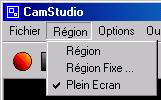
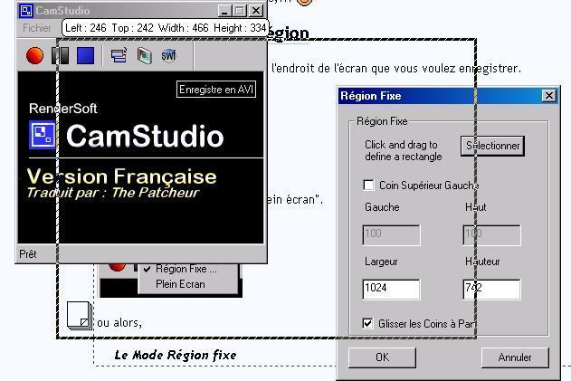
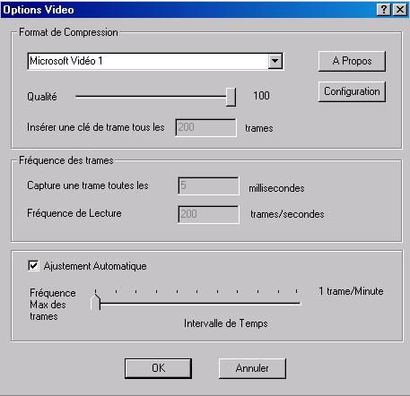
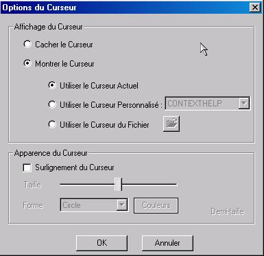
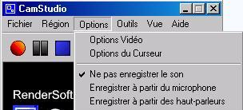
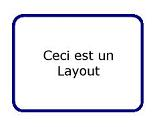
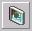
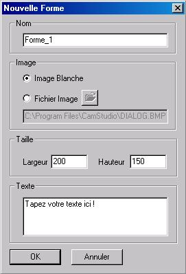
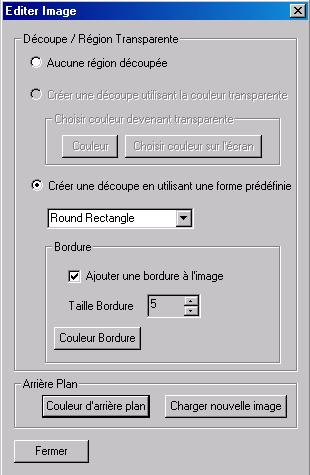

Dans ce tutoriel, je vais vous montrer comment faire une capture vidéo de votre écran ! :)
C'est-à-dire que tout ce que vous faites (ce que vous voyez sur votre écran) est enregistré dans une vidéo ! (Vous pouvez aussi délimiter une partie de l'écran), pratique hein !? ^^
C'est très utile pour montrer comment faire quelque chose dans un tutoriel (à condition de pouvoir héberger la vidéo...).
Avant de commencer à enregistrer, il faut configurer le logiciel : choisir "l'endroit" de l'écran à enregistrer, la qualité de la vidéo, etc...
Réglage de la Région
Commençons d'abord par déterminer la zone de l'écran que vous voulez enregistrer.
Vous avez le choix entre :
le Mode Plein écran
Tout l'écran sera capturé. Cliquez sur Région puis sur Plein écran.

le Mode Région fixe
C'est-à-dire que vous choisissez une partie précise de l'écran qui sera enregistrée.
Cliquez sur Région puis sur Région Fixe. Dans la fenêtre qui s'ouvre, cliquez sur Sélectionner, et choisissez la partie de l'écran en maintenant le clic et en déplaçant le curseur.

Dans l'image ci-dessus, on ne voit pas le curseur en bas à gauche de la sélection, car, lorsqu'on fait un screen, le curseur n'apparaît pas sur l'image ;) .
Pour ceux qui veulent savoir comment faire une capture d'écran, il faut appuyer sur la touche du clavier nommée Impr écran Syst (chez moi, elle s'appelle comme ça, mais il est possible qu'elle s'appelle autrement sur votre clavier). Cette touche se trouve juste à droite de la touche F12 (enfin sur mon clavier, c'est ça :D ). Ensuite, dans un logiciel de dessin, comme Paint, faites un clic droit, et collez. Et là, la capture d'écran apparaît.
Réglages des Options Vidéo
Il faut maintenant régler les options de la vidéo ; cette option sert à modifier la qualité qu'aura votre vidéo.
Pour modifier les options de votre vidéo, cliquez sur Options, puis sur Options Vidéo. Pour avoir la meilleure qualité possible, réglez les options comme sur l'image ci-dessous :

Pour que votre vidéo soit moins lourde, dans Format de Compression, baissez la qualité de la compression en bougeant un peu le curseur vers la gauche.
Je vous conseille de ne pas mettre la qualité en dessous de 75, parce que ça ne devient vraiment pas beau... :lol:
Réglages des Options du Curseur
Je vais vous montrer comment faire pour que, dans votre vidéo, le curseur de la souris apparaisse ou n'apparaisse pas, selon votre désir.
Cliquez sur Options, puis sur Options du Curseur.
Dans la fenêtre qui s'ouvre, si vous voulez que le curseur n'apparaisse pas, cochez Cacher le Curseur et cliquez sur OK.
Si vous voulez qu'il apparaisse, sélectionnez Montrer le Curseur et Utiliser le Curseur Actuel. Le curseur que vous utilisez actuellement apparaîtra dans votre vidéo. Cliquez ensuite sur OK.

Réglage du son
Si vous souhaitez ne pas Enregistrer le son, allez dans Options, puis cliquez sur Ne pas enregistrer le son.

Si vous souhaitez l'enregistrer, allez dans Options, et cliquez soit sur Enregistrer à partir du microphone (le son sera enregistré à partir de votre micro), soit sur Enregistrer à partir des haut-parleurs (le son sera enregistré à partir de votre PC ; par exemple, si vous écoutez la musique pendant l'enregistrement, la musique sera enregistrée). Pour plus d'informations sur l'enregistrement du son, ouvrez l'aide du logiciel et lisez les parties qui en traitent.
Voilà, le logiciel est configuré ! Je vais maintenant vous expliquer ce qu'est un layout :) .
Un layout est une "bulle" (contenant du texte) qui apparaît à l'écran pendant que vous faites votre capture vidéo. Cela permet d'expliquer ce que vous faites, au fur et à mesure de l'enregistrement.
Voici un layout :

Pour afficher ou cacher un layout pendant l'enregistrement, il faut appuyer sur une touche du clavier ; je vous expliquerai les raccourcis claviers ensuite ;) .
Je vais vous montrer comment créer des layouts, et comment les afficher pendant l'enregistrement de la vidéo.
Création de layouts
Pour créer des layouts, commencez par cliquer sur

, puis dans l'onglet Formes, sélectionnez Orange Gradient, et faites un clic droit, puis choisissez Nouvelle Forme. Pour le nom, tapez : Forme_1, et cochez Image Blanche. Dessous, tapez le texte qui sera affiché dans le layout. Et cliquez sur OK.

Un layout apparaît à votre écran, faites un clic droit dessus.
Si vous voulez modifier le texte, sa couleur, la police, la taille, ... cliquez sur Éditer le Texte.
Si vous voulez que votre layout soit transparent, cliquez sur Éditer la Transparence, et cochez Activer Transparence. Plus vous déplacerez le curseur vers la gauche, plus le layout sera transparent.
Si vous voulez modifier l'image du layout (parce qu'un rectangle blanc, ce n'est pas très beau... :lol: ), cliquez sur Éditer l'Image, et cochez Créer une découpe en utilisant une forme prédéfinie.
Choisissez ensuite la forme (moi, j'ai choisi Round Rectangle), puis cochez Ajouter une bordure à l'image et mettez 5 pour la taille de la bordure. Cliquez sur Couleur Bordure pour modifier la couleur de la bordure, et si vous le souhaitez, mettez en arrière-plan une couleur ou une image. Cliquez sur OK.

Déplacez le layout à l'endroit où vous voulez qu'il apparaisse quand vous enregistrerez la vidéo. Faites un clic droit dessus, puis cliquez sur Enregistrer Layout.
Dans l'onglet Layout, il y a un layout, faites un double clic dessus... et qu'est-ce que vous constatez ?
Le vôtre apparaît à l'écran ! :)
Faites un clic droit pour le fermer : Fermer.
Si vous voulez en utiliser plusieurs pendant la vidéo, créez-en d'autres; mais attention l'ordre d'apparition des layouts respecte cette règle : "Dans l'onglet Layout, celui qui est en haut apparaîtra en premier." Et celui qui est en bas, en dernier. C'est logique, non ? :D
Pour que l'on ne voie pas que vous utilisez un logiciel pour enregistrer la vidéo, il faut utiliser des raccourcis claviers.
Ils vont servir à :
Commencer à enregistrer la vidéo
Afficher un layout
Cacher (faire disparaître) un layout
Afficher le layout suivant
Et arrêter l'enregistrement.
Car si vous ouvrez CamStudio pour afficher/cacher des layouts... pendant que vous enregistrez, :lol: ça ne sera pas très beau...
Cliquez sur Options, puis sur Raccourcis clavier. Dans la fenêtre qui s'ouvre, modifiez les raccourcis comme dans l'image ci-dessous : (F1 pour commencer l'enregistrement, F2 pour l'arrêter, etc.) Puis cliquez sur OK.
Bon, vous en avez peut-être assez de bidouiller le logiciel. :lol: Alors c'est parti : on commence l'enregistrement ! Avant de commencer votre enregistrement, lisez tout ce qui est ci-dessous (c'est un conseil ;) ).
Si vous ne souhaitez pas utiliser de layouts, sautez l'étape concernée.
Étape 1 - Commencer l'enregistrement
C'est tout simple : pour lancer l'enregistrement, appuyez sur la touche F1 de votre clavier. Tout ce que vous faites maintenant sera enregistré dans la vidéo.
Étape 2 - Les Layouts
Pour faire apparaître le premier layout, appuyez sur la touche tabulation ; quand vous vous voulez l'enlever, appuyez de nouveau sur Tabulation. Pour faire apparaître le suivant, appuyez sur la touche F5. Appuyez ensuite sur Tabulation pour le faire disparaître.
Tabulation => fait apparaître / cache un layout. F4 => fait apparaître le layout précédent. F5 => Fait apparaître le layout suivant.
Étape 3 - Arrêter l'enregistrement
Quand vous avez fini d'enregistrer, pour arrêter l'enregistrement, appuyez sur la touche F2 de votre clavier.
Une fenêtre s'ouvre : tapez le nom que vous voulez donner à votre vidéo, choisissez l'endroit où vous voulez l'enregistrer et cliquez sur Enregistrer :) .
Vous savez maintenant réaliser une capture vidéo de votre écran . Et avec des layouts !
J'espère que ce tuto vous a plu et qu'il vous servira ;) .